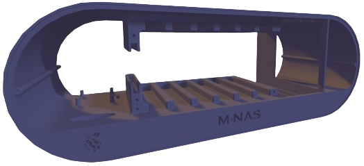
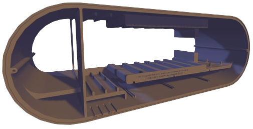

Retour aux projets
Retour
Télécharger le projet
Design d'un NAS sous Fusion 360
Contexte
Fortement intéressé par les systèmes Linux, j'ai expérimenté avec OpenMediaVault et TrueNAS sur de vieilles tours récupérées avant de vouloir concevoir mon propre NAS from scratch. Après l'acquisition d'un Raspberry Pi 4 et disposant d'une imprimante 3D, je me suis lancé dans la conception complète sur Fusion 360.
Contraintes de conception
- Emplacement pour une alimentation BeQuiet! ATX (partie droite)
- Support Raspberry Pi avec système de ventilation intégré
- 1 emplacement SSD (OS) + 6 baies pour disques durs HDD
- Bumpers anti-vibrations pour les HDD (filament flexible TPU)
- Goulotte de câblage arrière et sous les disques
- Cache arrière avec passe-câbles + face avant plexiglas découpée sur mesure
Résultat
Le modèle 3D est complet. Finalement, je n'ai pas procédé à l'impression car j'ai acquis le NAS Ugreen DXP6800 Pro lors du lancement de la gamme NASync — avec ses 64 Go de RAM et son Intel i5-1235U, il surpasse largement les ambitions initiales du projet et m'a ouvert la voie vers le Projet 6.

